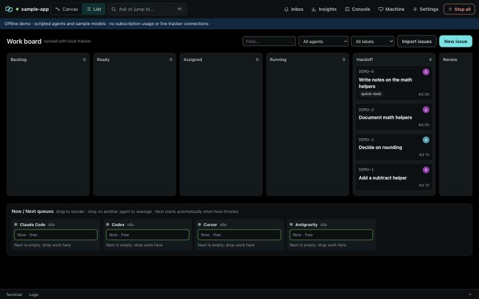

The coordinator did the work
Instead of coordinating, the lead agent wrote the code itself and nobody else moved.
Coordinator-only agents can't take code-writing assignments. Agents pull their work.
Run Claude Code, Codex and Cursor as a team on the plans you already pay for. Every run, decision and handoff lands in one event log on your Mac.

The control center makes each one impossible or loud.
Instead of coordinating, the lead agent wrote the code itself and nobody else moved.
Coordinator-only agents can't take code-writing assignments. Agents pull their work.
An agent waited forty minutes for an answer nobody knew it had asked.
No events for N minutes, or an approval pending for M minutes, raises a critical alert on your phone.
The board said done; GitHub said in progress; Linear said nothing at all.
Each status change commits together with its tracker write. Failed syncs alert. Polling catches edits made in the tracker.
A run hit the plan limit and silently fell back to paid API usage.
API-key variables are stripped from runs. Hitting a limit triggers a reassignment suggestion, never a paid fallback.
Three agents, one busy, two waiting for someone to notice.
Now and Next queues per agent. When Now finishes, Next starts. Idle with work queued is an alert.
An agent pushed to main because nothing stopped it.
Per-worktree pre-push hook on protected branches. Push, deploy, migrate and publish are routed to you. A kill switch.
Each agent runs through its vendor's official tool, signed in with your account. One Connect never extracts or stores vendor credentials and ships no vendor binaries.
| Agent | Adapter | Sign-in |
|---|---|---|
| Claude Code | claude-headless | claude auth login |
| OpenAI Codex | codex-cli | codex login |
| Cursor | cursor-agent-cli | cursor-agent login |
| Antigravity, desktop IDE agents | relay | copy the prompt in, paste the reply back |
| Any other CLI | generic-cli | the tool's own login |
The daemon, the event store, the adapters and the Mac shell are all in one repository. Read how the kill switch works before you trust it. Issues and pull requests are welcome.
# try it without spending any usage pnpm install pnpm demo # scripted agents, sample repo, local tracker # your own project pnpm acc onboard # finds vendor CLIs and their login commands pnpm acc daemon
Requires Node 24+, pnpm, git and the vendor CLIs you want to use. Project state stays under your Application Support folder.
Questions, approvals and cost decisions reach a phone-friendly inbox. Every answer is recorded with the channel it came from, so the log always says who decided what, and where.
A development preview. The Mac app bundles the engine; vendor tools and accounts stay yours.
Web version: in the works.